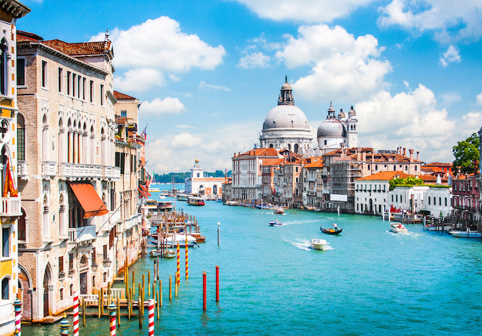

Top 5 Best Places to Visit in Italy
1.Rome

Formerly the capital of the Roman Empire, Rome today is the government seat and capital city of Italy.
Located in the country’s central region of Lazio,
Rome is a vast and complex city that is both historic and modern at the same time.
Best known for housing ancient Roman structures and the Vatican City, Rome has endured for more than 2,500 years as an important center for culture, power and religion.
From ancient romantic plazas to stunning cathedrals and Renaissance architecture, there is so much to see and do in Rome, that it could take months or even years to see it all.
2.Tuscany

Italy’s most famous region, Tuscany conjures images of beautiful rolling hills, olive groves, vineyards and cypress trees.
The many pleasures of Tuscany include tasting wine in Chianti, simply relaxing in hill towns such as San Gimignano or exploring Renaissance art in Florence.
The medieval city of Siena also holds excellent works of art while its historic center is one of the most popular places to visit in Italy.
Elba, the largest of several Tuscan islands, offers great beaches while Pisa is world-famous for its Leaning Tower.
3.Venice
One of the best places to visit in Italy, Venice is a unique city in that is built upon a lagoon surrounded by the Adriatic Sea.
Located in northeastern Italy, Venice is an archipelago of 118 islands all connected by hundreds of beautiful bridges and scenic canals.
Of the canals, the Grand Canal is most famous and divides the city into two sections.
Picturesque waterways and historic architecture make Venice one of the most romantic cities in the world.
Venice is often crowded but well worth visiting to see its magnificent landmarks like Saint Mark’s Square and Basilica, Doge’s Palace and Rialto Bridge.
One of the most popular things to do is to take a gondola ride along one of its many canals.
4.Pompeii

One of Italy’s most visited tourist destinations, Pompeii is a famous Roman city which was buried under several feet of volcanic ash for nearly 1,700 years after the cataclysmic eruption of Mt. Vesuvius.
Excavation of Pompeii began in 1748, and the site is yet to be totally unearthed. The site is located near the modern city of Naples.
A tour of Pompeii offers a fascinating insight into the everyday life of the ancient Roman world.
Visitors can walk along the ancient streets to see the remains of bakeries, brothels and baths.
5.Amalfi Coast

Situated in Italy’s southwestern region of Campania, the Amalfi Coast is known for its extraordinary beauty that makes it one of Italy’s top tourist destinations.
Stretching 30 miles along the southern side of the Sorrento Peninsula, the Amalfi Coast is prized for its picturesque coastline that features shimmering bays, craggy cliffs,
lemon tree gardens, multicolored villas and ritzy resorts.
One of the most romantic and posh towns along the Amalfi Coast is Positano with its beautiful pebbled beaches, pastel houses and scenic mountains.
One of the larger towns, Amalfi, features lovely plazas lined with restaurants while the town of Ravello is favored for its beautiful villas of gardens and art works.